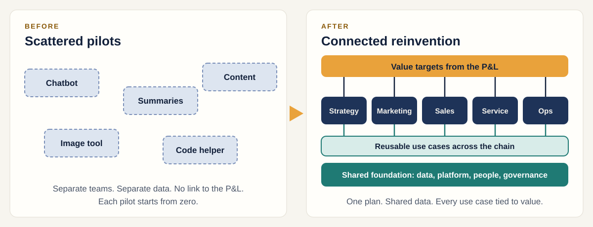

No line to value
Nobody can say which P&L lever the pilot moves, so it never gets funded to scale.
Home / The big idea
The big idea
Gen AI pays off when it is planned as one programme tied to value, not run as a string of experiments.
The problem
Many organisations have a dozen impressive demos and no change in the numbers. Four causes keep showing up.
Nobody can say which P&L lever the pilot moves, so it never gets funded to scale.
Data and platforms that work for a demo cannot carry a production workload.
Roles, controls and consent are raised at launch, when changing course is costly.
Every pilot builds its own data pipeline and guardrails, so each one costs as much as the first.
The shift
The same tools, organised around value targets and a shared foundation.

Reinvention means changing how the work gets done end to end, not adding a tool to the old process.
The thinking behind it
Everything else in the framework follows from these.
Every use case must trace to a lever on the P&L: revenue, cost, risk or sustainability. If it does not, it waits.
Ambition does not decide what goes first. What the data, platform, people and rules can support today does.
Roles, skills and controls are designed alongside the technology, not bolted on before launch.
Two kinds of use case
Not every use case is worth the same effort. Sort them first.
Competitors will do it too. The aim is to do it efficiently and move on.
Harder and slower, with a bigger payoff. These need a stronger data foundation first.
How to choose
Score each use case on both, then place it. Top right goes first.
High value, not ready. Build the foundation first.
Next-best-offerHigh value, ready now. Pilot these.
Product descriptionsLow value, not ready. Revisit later.
Virtual try-on avatarsLow value, ready. Cheap to try, small prize.
Archive auto-taggingPlacements are illustrative, for a retail marketing team. The next pages show how scores are built.
In practice
Six shifts that separate reinvention from experimentation.
Next
The framework answers two questions: what to cover, and when. The next page puts them side by side.